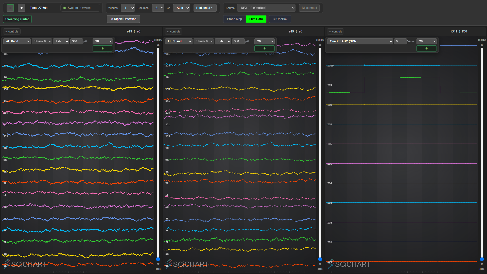

SpikesPeak — Developer Docs#
Onboarding + reference for the SpikesPeak acquisition stack (Qt/C++ backend, external-browser UI, closed-loop stimulation). Start here, then jump to the doc for your task below.
Current state, checked 2026-09-02.
feature/OneBoxSupportwas merged intodevelopon 2026-09-01 (fast-forward,60889d7); OneBox support is complete and there is no live feature branch (Status §84). #52 is closed — all five second-machine configurations have run, the last two on 2026-09-02 (§87, §88) — and two probes on one basestation now prompt the operator instead of being guessed at (§89). Both basestations are production paths — PXIe and the OneBox (USB3/FTDI) stream NP1.0 and NP2.0, record, and close the loop. The closed-loop latency matrix is complete on the OneBox as well as PXIe: 11 cells × 1000 detections per probe, 11,000 detections / 11,000 confirmed fires / 0 unmatched, sub-millisecond with ASAP delivery, with the OneBox matching or beating PXIe in every cell (Status §48, 2026-08-20). Saline bench validation finished 2026-07-21; the milestone that used to sit at the end of this banner — in-vivo under anesthesia — came round on 2026-08-28: it ran, the recording was noisy, and every quoted closed-loop figure is still a saline-bench number (§85). The live view has had no chart library since 2026-08-27 (§62). Measured numbers: the Hardware Results page (../RecordingTests/CLOSED_LOOP_LATENCY.md).This paragraph is a snapshot and will rot. The log will not — current status lives in
../SpikesPeak_Status.md; read its Session index from the bottom up.
If you are a human rather than an agent, this page is not your front door. Start at the repo's
../README.md for what SpikesPeak is and how to build and run it, or
../user_docs/README.md if you want to operate it rather than change it.
For how work is done here — branches, commits, the gate, the doc conventions — see
Contributing.md.
START HERE — the path for a new agent (≈30 min, in this order)#
Before you call anything green#
Three suites must pass — C++, Python, GUI. A compile that produced a binary is not a green build.
bash build.bat --no-pause # or ./build.sh -- C++ suite runs automatically; output goes to bin/ python -m unittest discover python/tests # Python suite — seconds python scripts/run_gui_tests.py # GUI suite — you must run itOr all three in order, behind a live progress page:python scripts/run_all_tests.py.The C++ suite runs on every build and prints ✅/❌ per suite. The Python suite covers the offline half — the converters, the counts-to-microvolts scale, and the sync pairing every published latency passes through; it was not in the gate at all until 2026-08-30, which is worse than having no tests, because their existence read as coverage. The GUI suite is not part of the compile (it needs a browser and a backend), so it is on you to run it — always after touching
webinterface/. A failing C++ suite does not stop the build, which makes red easy to walk past. Don't.--no-pausematters in a script:build.batholds its window open by default and will otherwise hang at "Press any key to continue". SeeTesting.md— which is the only place suite and case counts are maintained — andGuiTestCoverage.md.The GUI suite runs FOUR tests at a time since 2026-09-01 (
--jobs auto=min(4, cpus-2), the measured knee;--jobs 1restores serial). Each job gets its own backend on its own port pair and its own isolated Chrome, so nothing is shared and nothing has to be reset between tests. A test that hangs is killed atSPIKESPEAK_GUI_TEST_TIMEOUT(default 900 s) and reported as a failed test rather than crashing the run. Both runners take one shared lock (scripts/_gatelock.py), so a suite started beside a running gate refuses instead of silently attaching to the gate's backend — and the runner names any backend that survived, and any[untested]notice a passing test printed.On Linux, read
Testing.md§1a first. All three suites were re-verified there from a clean clone on 2026-09-01 (Linux Mint 22.1 / GCC 13.3 / Qt 6.11.1, real X session, real GPU). The box needs a Qt ≥ 6.7 that is not the distro's (Ubuntu 24.04 ships 6.4.2, and it fails at configure),libasound2-devinstalled before the first configure, and a real display — headless is unproven, and the operator has decided it does not matter: the GUI exists to be looked at. No hardware row can be closed there.
../images/architecture_overview.md— the whole system in one pass, current as of 2026-09-02: the connect path and its three stop points, the four processors C++ wires without a profile, faults and liveness, the teardown order, the low-latency graph (#80), the transport, the frontend module catalog, the two stimulation paths, where the three suites live — and the pipeline diagrams, generated from the code. Nothing else makes sense first.SpikesPeak_Architecture_Review.mdis the history and rationale (why an external browser, the Option-A command model); read it second, for why.- "Operating this repo" (below on this
page) — the gotchas that cost agents hours: the working tree IS the deployment —
webinterface/andconfig/*.yamlare served live from the repo (one copy, no build), so never edit them while a backend or the GUI suite is running; backend logs go tooutput.log; the server auto-quits when the last WebSocket client leaves; and how to launch. ControlCLI.md— how to drive the backend with no GUI. This is how you do anything headlessly; almost every script underripple_tools/is built on the same WS client.GuiTesting.md— the UI is an external browser, so "check the GUI" means driving a real Chromium over CDP (python/tools/cdp.py) and screenshotting it.AgentTraps.md— the things here that are not wrong but are not what they look like: a constant named for a sample rate that is a tick rate, a getter that creates what you asked it to check for, a queued call that is not delivered until Play, a fatal that reports as a test with no output. Every entry cost somebody real time. Add to it when something costs you time.SourceSelection.md,ConfigReference.mdandClosedLoopDriving.md— before you write a profile or a script that drives the backend. What is a config key and what is a runtime command is not guessable from the YAML, and the driving sequence has one step everybody misses.- The doc for your actual task from the tables below.
Before you touch hardware, also read the Safety rules in the spikespeak skill (never force-kill a
backend with a real probe attached; never leave the rig UP — not streaming, not merely connected — while
you are not using it; kill only the debug-port Chrome).
Skills you have on this repo: the spikespeak project skill (.claude/skills/spikespeak/ — the
cross-machine memory, since ~/.claude auto-memories do NOT travel between machines; architecture,
build/run, configs, safety — read it); dataviz (read before making ANY figure — it has a runnable
palette validator, the skill's own scripts/validate_palette.js, in the dataviz skill directory and not in
this repo; the latency figures use validated light+dark palettes);
and agy delegation (UsingAgy.md — Claude conducts + verifies, agy executes
bulk/spec-driven work; always re-run the gate yourself).
Verification culture — the one habit that matters here. Claims about this system are cheap and often
wrong; the recordings and the DOM are the ground truth. Do not report a conclusion you have not checked
numerically. Two examples that actually happened, both written up in
RippleClosedLoopAnalysis.md:
- A latency "anomaly" was blamed on the stimulator and the detector for 30+ minutes; it was an offline sync off-by-one, found in 2 minutes by comparing NPX vs NI-DAQ sync pulse counts.
- A sidecar was reported as globally broken after inspecting one file; two of the three were perfectly populated, and the real cause was a race, not a broken writer.
Generalizing from a single artifact, or theorizing about hardware before plotting the signal, is the characteristic failure mode on this repo.
Traps this repo has already sprung (internalize before touching the closed loop)#
The concrete domain facts behind the tables below — each is documented in full where linked:
- NP2 offline reproduction uses an EXACT 2nd-order Bessel
data.lfp(−3 dB @ 400 Hz) then ÷12. An olderraw÷12 + DC-removalapproximation is wrong — never reintroduce it. NP1 reads nativedata.npx.lfpdirectly (decimation 1). (RippleDetection.md) - Latency stage splits use MEANS, not medians. The batching counter is quantized to one input sample
(400 µs), so medians snap to 0/400/800 µs and are not additive; the
net+stimterm is a residual by subtraction. (LatencyProfiling.md) - ASAP delivery (acquisition poll 1 ms → 0, opt-in) is the only latency lever. On NP2 it also
removes upstream raw-poll latency the detector-side counter can't see, so the counter
under-reports the win — the NI-DAQ total is authoritative. On both probes it takes the loop
sub-millisecond. Since #80 it is a per-module GUI control, not only a
low_latency:config key: a module declaresexposesLowLatency()in C++, the backend sends only those, and turning one on turns it on for everything upstream of it. The source reads its flag once, instartAcq, so a request made mid-acquisition is reported as pending and takes effect on the next Play — the control is disabled while streaming rather than silently deferring. (webinterface/LowLatencyModule.js,src/core/LowLatency.hpp;LatencyProfiling.md) - Never validate a periodic signal by nearest-neighbor pairing. Three separate NI-DAQ↔NPX clock/sync
bugs (a ~10 ppm scale ramp + two whole-period off-by-ones) all read as perfect on every scalar metric
(ppm, residual, intervals); anchor on the aperiodic structure instead.
(
RippleClosedLoopAnalysis.mdis the sync canon.) - A generic command/event subscription bus does NOT exist yet (the one live item left on the retired
todo.txt; folded into Status §31) — it's approximated by config-wired data streams + Qt signals +Q_INVOKABLE+ the two-subscriberCommandDispatcher(audio0x218, bands0x219). See architecture review §11.6 and../NextSessionPrompts/01_command_event_subscription.md.
What is here#
The pages sit in eleven groups, plus the retired briefs and snapshots in archive/ (which carries its
own index). The generated book uses the same groups, in the same order, as
the collapsible sections of its left nav (scripts/build_docs.py → GROUPS). If you add a doc, or move
one between groups, do it in both places — the map a human reads and the map the book renders are no
use to anyone once they disagree. The build prints a warning naming any page that is in neither.
A page has to be in BOTH, and the build says so when it is not.
ArchitectureDiagrams.mdhad its row below but no entry inGROUPS, so the book rendered it under "Unsorted" at the bottom of the nav — exactly where the convention says docs go to be missed. Noticed and fixed on 2026-09-01.scripts/build_docs.pyprints aWARNING: not in GROUPSline naming any page in this position, so the next one is caught by running the build rather than by someone noticing a lonely nav entry.
Start here · Architecture and contracts · Extending the stack · Probes and DAQ hardware · Signal processing · Ripple detection and closed loop · Live view and GUI · Recording and headless control · Testing · Working on this repo · Plans and open briefs · Elsewhere in this book
Start here#
Read before touching the core. (In the book this group also holds this page.)
| Doc | Read it to… |
|---|---|
AgentTraps.md |
The things that are not what they look like — names that mean something else (kHeadstageSamplingRate is 100 kHz TICKS; getDataByName CREATES), what is actually running when, the ring-buffer commit-count invariant, the Windows/shell/build traps, and the recurring "announced REQUESTED state instead of CONFIRMED" defect class. Written from real time lost; keep adding. |
ConfigReference.md |
Every config key, and the much longer list of what is NOT one. The keys of every source and processor, extracted from the call sites and verified against the shipped profiles, plus the runtime-only parameters that no profile can set (the ripple detector's channels, z, lockout and quorum among them) and the two opposite boolean idioms. |
RendererExperiment.md |
Why SciChart was removed, measured — and what draws the live view now. The repeated-measures experiment (2 renderers x 5 densities x 5 interleaved repeats, CPU and GPU, idle control) and its hardware validation at 480 real traces: 4.28x less renderer main-thread CPU, 2.45x less browser CPU, 42 -> 60 fps, and the GPU at parity — the win is CPU, so do not quote a GPU saving. Then §9, the removal itself on 2026-08-27: the bundle deleted, GlRenderer.js (WebGL2) for the traces, ProbeMap.js (plain canvas 2D) for the probe map, the globals that went with them, and the label-alignment bug it fixed. The part worth reading even if you never touch the renderer is WHY it is faster: the live view needs almost none of what a charting library does, and SciChart re-established all of it per series per frame. Also the two mistakes that each produced confident wrong numbers. |
SourceSelection.md |
Why the Source dropdown lists Neuropixels and PXIe with NI-DAQ instead of twelve profiles, and how the probe names itself. Neuropixels is source.npx.auto — basestation and probe read from the rig, resolved before any source object is built; OneBox / PXIe / PXIe + NI-DAQ are now gui_hidden: true escapes, selectable by name from the control CLI; all three are put back in the menu (the auto PXIe with NI-DAQ is withheld there, since it would only ask again), and only when the scan finds a OneBox and a PXIe (main.js renderSourceRoot(), the ambiguous branch). The connect order that makes it work (setupSources finishes before setupProcessors, so the registry already holds the detected probe's bands), the six probe-dependent decisions and where each is made, what a hardware profile still declares, and the two config keys the simulated picker cascades on. |
ClosedLoopDriving.md |
How to drive the rig headlessly without losing runs to it. Use ripple_tools/rig.py; call retrain() or the detector never trains; tell "no samples" from "trained but quiet" using rippleEnvelope; the backend writes output.log to its WORKING directory; and what a wedged basestation looks like in the log. |
SpikesPeak_Architecture_Review.md |
History and rationale — why an external browser, the Option-A per-module command model, the file-I/O rule. A dated snapshot (it predates the OneBox transport, the WebGL2 renderer, the heatmap, detached views, source selection and #80); the current overview is ../images/architecture_overview.md. |
Architecture and contracts#
| Doc | Read it to… |
|---|---|
ModuleCommunication.md |
Frontend to backend commands: the per-module Q_INVOKABLE/QWebChannel standard, examples, the thread-safety rule, and the recipe to add a command. |
Fdir.md |
Fault detection, reporting, valid state + whole-system monitoring (issues #11/#16/#18): the confirmed-not-requested rule, the generic processor fault relay, the startup watchdog, ErrorLog, the getSystemState snapshot and the processor liveness monitor. |
Logging.md |
Log format and severity (issue #2): what every line carries (time, level, thread, file:line), why severity belongs in the level and not the message text, and what not to log. |
Extending the stack#
| Doc | Read it to… |
|---|---|
AddingASourceModule.md |
Add a source (hardware, network, file, simulation), including the noteCycle() liveness contract. |
AddingASinkModule.md |
Add a sink/processor (display, recording, DSP, derived streams). |
SyntheticSources.md |
Configure procedural waveforms + .h5 file playback; mimic NP1.0 vs NP2.0 data structures. |
Probes and DAQ hardware#
| Doc | Read it to… |
|---|---|
Neuropixels2.0.md |
NP2.0 multishank: geometry, mapping, what is wired vs stubbed. |
NiDaq.md |
NI-DAQ streaming, configs, the probe codependence, the stuck-reservation failure mode, and the 2026-07 robustness fixes. |
OneBoxWiring.md |
Which OneBox connector is which, and what is a patch cable. The fixed routing (DAC0 reaches breakout BNC IO0, not the SMA -- four days of #49), the fact that SMA 1 has no IO number because it is patched somewhere different every session, a dated bench-wiring table, the ADC range trap (5 V logic on the +/-5 V default rails the analog while the comparator bit stays correct), and the checklist of tool defaults that go stale when you rewire. |
IntanMicroZed.md |
Intan on the Kemere lab MicroZed — the design, and what is not known yet. The decisive fact: it is TCP control + UDP data over ordinary sockets, so it needs no vendored SDK and no new dependency — Qt6 Network is already required and StimulatorClient already drives a QUdpSocket. Also the parts that will bite: 30,000 datagrams a second, an upstream wire format that is mid-migration (the docs and the reference client disagree, and the reference client wins), a +2 SPI pipeline deskew that has already shipped as a bug once elsewhere, and BandFilterProcessor hardcoding 384 as a stride — which would scramble a 256-channel stream without erroring. §6 is the list of questions only the Kemere lab can answer. |
IntanOpenQuestions.md |
The questions that block connecting to a real Intan board — and who can answer each one. Deliberately three audiences kept apart: what the operator must decide, what only the Kemere lab can answer (written to be asked in ONE round rather than discovered one at a time), and what we can settle ourselves. The expensive one is §1.1, the LFP path: generalizing BandFilterProcessor to a runtime channel width touches the AVX2 fan-out and both strides in code that runs at 30 kHz. Nothing here blocks today's code — the parser and control framing are written and tested against synthesized packets — and the source refuses to connect on purpose. |
HardwareFaultGuard.md |
Stopping before issue #54 — the failed-connect tally, why the threshold is two and never resets, the blocking operator dialog, how restart actually relaunches, and the QThread teardown crash this work uncovered. |
OpenEphys-NP2-Reference.md |
How the vendored OpenEphys plugin drives 2.0 multishank (reference). |
OpenEphys-OneBox-Reference.md |
How the vendored OpenEphys plugin drives the OneBox USB basestation — a digest cross-checked symbol-by-symbol against the vendored v4 header. The port is shipped: the shipped code, ../user_docs/OneBox-NPX2.md and SourceSelection.md are the authority, and the archived plan (archive/NextTask_OneBoxSupport.md) is history — one of its scope items was unbuildable. |
Signal processing#
| Doc | Read it to… |
|---|---|
DerivedBands.md |
The LFP and spike bands derived from one raw stream — one shared AVX2 band processor, the 300–6000 Hz Bessel coefficients, the measured CPU cost of each band, the enable/disable switches, and how a float band reaches the display at all. |
FilterDebugging.md |
The per-sample filter .bin dumps and their compile-time kill switches — DEBUGGING_RIPPLE_DETECTION_FILTERS in the detector and kDebugFilters in the shared BandFilterProcessor (it used to be DEBUGGING_LFP_FILTERS in an LFPProcessor.cpp that no longer exists, and now gates one dump per derived band) — all shipping false; the dump formats, and how the filters were validated to float32 rounding. |
SpikeAudio.md |
Listening to a channel's AP band through the speakers — the 300–6000 Hz Bessel band-pass, the digital-diode threshold, click-a-label channel selection, and the 0x218 / audioState control surface. Modeled on Trodes. |
SimdDispatch.md |
What AVX2 is worth, and when (issue #34) — why the bug was the BUILD rather than the missing check, why CPUID alone is not sufficient (XCR0), the 2.89x the vectorized filter measures, and the end-to-end null result on NP1.0 that looked like a failure and was not. Also: why the gate runs the C++ suite twice. |
Ripple detection and closed loop#
| Doc | Read it to… |
|---|---|
RippleDetection.md |
The SWR detection algorithm + the NP1 vs NP2 detector input paths (native LFP vs derived data.lfp). |
SimulatedSignals.md |
What the fake probes emit in each band. The NP1.0 300 Hz/500 Hz band-split model, why a 200 Hz ripple appears in the AP band too (at ~60% — "attenuates" is not "eliminates"), the 15× disagreement between the live simulator and the play-file generator that this fixed, and how to verify it end-to-end. Also: recording .bin frames carry a 6-byte header — reshaping without it yields convincing garbage. |
RippleGui.md |
The GUI-driven ripple module (dock, per-channel controls, editable stim pulse params, the binary command frame). |
RippleDetectorThreading.md |
Should each detection electrode get its own thread? Measured answer: no. ~28 ns per channel-sample scalar, so one thread covers ~14,000 channels at the detector's 2.5 kHz decimated rate and the whole 384-channel probe costs 2.7 % of one core. The dominant latency is filter group delay + envelope build, which is threading-independent — and AVX would be the higher-leverage change long before threads. Includes the crossover where multithreading does start to win, and why an earlier version plausibly was multithreaded. (The stim socket and the fired-ACK path are in RippleGui.md, not here.) |
RippleClosedLoopAnalysis.md |
The offline-analysis + sync canon. Reproduce the NP2 detector EXACTLY from disk (Bessel data.lfp), the closed-loop latency method (pulse-anchored + burst-anchored cross-check), the NI-DAQ↔NPX sync fit and all three clock/sync bugs (clock-scale ramp + two off-by-ones), and how to read a detection/pulse count mismatch. Read before trusting a recorded latency. |
LatencyProfiling.md |
Closed-loop latency method + the ASAP flag. The definition (threshold crossing → ai4 pulse), the live per-stage rippleLatency breakdown, where the milliseconds go (incl. the NP2 upstream-latency finding), and ASAP delivery — on both probes (Npx1Probe/Npx2MSProbe::setLowLatency), and since #80 settable per module from the GUI as well as from a profile's low_latency: key. Numbers live in the Hardware Results page. |
Profiling.md |
Where the time actually goes — the profiling report. Load rather than latency: the frontend is ~1.2 % of the main thread with no hot spot, the heatmap draw is flat in channel count (0.001 ms at 384 and at 1536 — one draw call either way), the backend sits at ~1.02 cores regardless of display mode, and AVX2 is 3.10x in the filter while moving the whole NP1.0 backend by nothing (because NP1.0 gets LFP from the probe — the reconciliation is the interesting part). Also records the optimization deliberately not taken, and why no benchmark is in the gate. |
AudioVideoLatency.md |
What you see, what you hear, and how old both are. You see it first: the trace is ~19 ms behind the probe; the speaker was ~116 ms on the old default audio device (99.9 ms of it the device's measured output latency, which nothing in SpikesPeak can shrink) and ~47 ms is expected on the follower device chosen since 2026-08-25 — not yet re-measured. Includes what is instrumented, what each figure costs, and the two mistakes made getting there (a poll-time data race, and a claim that the ring depth was unmeasurable). |
The closed loop end to end (ripple → UDP fire → Pi → AM 2300 → the fired-ACK → red LED) and its
hardware verification are recorded in ../SpikesPeak_Status.md §21–§25; the old
StimClosedLoop_Status.md snapshot now lives in archive/. Pi setup is in
raspberrypi_pulsegenerator/README.md.
Hardware test results live next to the data in RecordingTests/ and are in this book under
"Hardware Results": CLOSED_LOOP_LATENCY.md — one
consolidated, tabbed page (NP1.0 / NP2.0) with the full quorum × delivery latency matrix at 1000
detections per cell, detection-integrity and sync tables, the stage decomposition, and the cross-probe
comparison. Both probes run the identical test matrix; the tabs show the parallel results.
Live view and GUI#
| Doc | Read it to… |
|---|---|
LiveDataView.md |
Work on the waveform display: data plane, depth/shank/electrode-column model, per-column filters, orientation. |
RendererContract.md |
The normative spec a live-view renderer must satisfy — written with the SciChart implementation as its baseline and now satisfied by webinterface/GlRenderer.js, the only renderer since 2026-08-27. Read it before changing anything about how a sample reaches the screen: Y values arrive already in absolute plot coordinates (nothing may re-offset, re-scale or auto-fit them), each timebin contributes a MIN and a MAX at the same x so x is not strictly increasing, and painting is coalesced rather than synchronous with append. Where it and the code disagree, the code is right and the doc is the bug. |
RenderingPerformance.md |
How the bottleneck was found, and the SciChart-era trace budget. The ~320-series wall on this box, the optimizations that moved nothing (the parse in a worker moved nothing), the benchmark that silently measured an idle, unconnected view at a beautiful 60 fps, and the 2026-08-27 re-measurement that isolated the cost as per-series, by a factor of 9. Historical in its conclusion: its density advice is about a renderer that no longer exists — SciChart was removed on 2026-08-27, and RendererExperiment.md is the current record. One rule from it still binds: compare main_thread_busy across sessions, fps only within one. |
ProbeActivityHeatmap.md |
UNBUILT — the SPATIAL heatmap (color the electrodes on the probe map by activity, no time axis; the SpikeGLX Shank Viewer model). Not the built time × channel column, which is HeatmapView.md. A superseded plan: its two SciChart-based rendering options have been void since 2026-08-27; kept for the requirements and the visual argument, and the metric pipeline it needs now exists. |
HeatmapView.md |
The time × channel heatmap column — why it shares the column's WebGL2 context (Chrome grants ~16 per renderer process and evicts the oldest silently), why the ring lives in the texture and nothing scrolls, why bins are aggregated by MAX, the colormap-and-legend contract, the display-unit factor of 100 that nearly shipped, what it measures at 384/960/1536 channels, and how to add a statistic. |
DetachedViews.md |
Extra view windows — index.html?view=detached, why noopener is load-bearing rather than a nicety (measured three ways), what such a window keeps and deliberately loses, and the HTTP query-string bug it surfaced. |
Recording and headless control#
| Doc | Read it to… |
|---|---|
Recording.md |
How the Record button reaches disk: file location/format, verification checklist, sharp edges. |
DataConversion.md |
Exporting to SpikeGLX / Open Ephys: the sidecar contract, band -> stream mapping, why probe identity decides the microvolt scale, why the NP1.0 AP band is refused, and what each export derives field by field. |
RecordingTest.md |
The headless "Recording Test" runbook (NP1.0 + NP2.0). |
ControlCLI.md |
Both headless command interfaces: the built-in console commands (connect/play/pause/disconnect/quit — issue #6, Windows-confirmed) and the WebSocket CLI python/spikespeak_cli.py (list/select/record/…), with a tutorial + worked examples. |
Testing#
| Doc | Read it to… |
|---|---|
Testing.md |
The test suites and the green/red lights — C++ (Qt Test + CTest, runs on every build), Python (python/tests, seconds, in the gate since 2026-08-30) and GUI (python scripts/run_gui_tests.py, real-browser layout/render invariants, four at a time). Testing.md carries the current suite/case counts, which are maintained there and nowhere else. Also §1a, running the lot on Linux, how to add a test, and the top-down method for telling a SOFTWARE fault from a HARDWARE one — sim-vs-rig, counting frames at the socket, and what the liveness counters actually count. |
InvariantTests.md |
Making a defect class unwritable — and why it is not textbook TDD. Arrived at by having the same bug FOUR times: the system announcing what was REQUESTED instead of what was CONFIRMED (#16/#18, #51, and two more on 2026-08-30). Each was fixed with a test about the bug rather than the rule it broke, so the next appeared where the last fix did not reach. The practice: write the predicate down and check it at every transition, so a future connect path that publishes a name before the connect succeeds cannot pass — whoever writes it. Also the rule of thumb (the second time a bug of the same shape appears, stop fixing bugs and write down the rule) and the point that a source which refuses on purpose is test infrastructure, not a placeholder. |
KnowledgeOps.md |
Where what you learned goes. The decision table: a mechanical mistake becomes a CHECK, a rule spanning call sites becomes an invariant test, a derivable fact goes in scripts/facts.py and nowhere else, and prose is reserved for WHY. Also how to turn a trap into a check, when NOT to, and how to keep the agent skill current. |
GuiTestCoverage.md |
What the GUI tests actually cover — the 16-cell layout matrix (columns × ripple dock × orientation) with screenshots, every stream option's expected units/labels/depth, the GUI→backend parameter round trip, and an explicit list of what is NOT covered yet. The matrix's vertical axis now reports [untested] when no portrait display is attached, instead of running a landscape window twice and passing; PASSED-with-untested is a different result from PASSED and reaches the runner's own output. |
GuiTesting.md |
Drive + screenshot the browser GUI headlessly (CDP harness), UI element ids, teardown discipline, the one-shot functional smoke test (§5). |
SecondMachineRunbooks.md |
Standing up this tree somewhere else — one runbook per configuration of #52 (closed 2026-09-02, every configuration having run at least once: Linux/no hardware, Windows/no hardware, OneBox+PXIe together, PXIe alone, OneBox alone): exact commands, what each proves and cannot prove, what evidence to record (in ../SpikesPeak_Status.md now that the issue is closed), and the traps specific to each. Read the "one trap that affects every configuration" section before trusting a green layout_matrix. |
Working on this repo#
| Doc | Read it to… |
|---|---|
Building.md |
Build and run, on Windows and Linux, from a plain terminal. No Qt Creator, no "Developer Command Prompt", no path edited into a script. Prerequisites per platform, what build.bat / ./build.sh actually do, why --no-pause exists (they hold the window open by default so a double-click does not vanish, which hangs a script at "Press any key to continue"), the incremental rebuild.bat, and what macOS is still missing. |
ArchitectureDiagrams.md |
How the pipeline pictures are made, and why none of them is drawn by hand. scripts/make_architecture.py reads src/core/Utils.cpp and every config/*.yaml and emits the SVGs; the docs build re-runs it, and a test asserts the output still matches the code. Read it before changing the generator, and read §2 before concluding that a node with no edges is disconnected — proc.lfp, proc.spike and proc.audio are wired by C++, not by any profile, and were drawn as orphans until 2026-09-01. Also the layout rules and what each one cost: top-down bands (columns made it 1580x2460), text-measured boxes (fixed ones overflowed by 70 px), and bundled config edges (one edge per profile into each source was an untraceable hairball; the page carries the counts, with their date). |
BuildingTheDocs.md |
Regenerate this docs book (python scripts/build_docs.py; the only dependency is markdown), and how the nav grouping is defined. |
Contributing.md |
How work is done here — branch naming, commit style as practiced, the three-suite gate, citing issues by number, American English, where captures go (never the repo), and the doc conventions that keep this book navigable: a page's row here and its GROUPS entry in scripts/build_docs.py move in the same commit, a finished NextTask_* brief is archived in the commit that finishes it, and ../SpikesPeak_Status.md is append-only. |
CodeStyle.md |
The formatter, and why it has not been run yet. .clang-format DESCRIBES the style already in the tree -- every setting derived by counting, not chosen from a preset: 4-space indentation (one lone tab in the whole tree), 100 columns at the measured p95, brace-on-next-line by a three-to-one majority, and the definitions written bool then Class::method(...). Applying it would touch about a third of all lines (the page carries the measured figure, with its date), of which reflow is only a third -- so it waits for an empty PR queue, lands alone, and takes a .git-blame-ignore-revs entry in the same commit. Include sorting and comment reflow are off on purpose, and the reasons are the interesting part. |
UsingAgy.md |
The Claude-conducts / agy-executes delegation workflow used on this repo. |
SimDataLinux.md |
The design record (done 2026-07-06) for the simulated NP1.0 source on Linux: Option A (sim rides the real data.npx.* pipeline, so the GUI cannot tell sim from hardware) and the one-simulated-source-class-per-module rule that AddingASourceModule.md cites. Not a build guide — see Building.md and Testing.md §1a. |
Plans and open briefs#
Transient by design — delete or archive each one once it is done (see the archive policy below).
| Doc | Read it to… |
|---|---|
NextTask_SourceArchitecture.md |
Open design brief — reorganizing "source options": taming the config explosion + the dual picker, and supporting arbitrary NPX simulation, NeuroNexus/Intan probes, and replay-a-recording-by-hitting-Play. Phase 1 shipped 2026-08-26 (36 config files; three operator-visible hardware entries that day) and was overtaken on 2026-08-27 by the self-naming rig — two visible entries, Neuropixels and PXIe with NI-DAQ, with OneBox/PXIe/PXIe + NI-DAQ now gui_hidden (see SourceSelection.md); Phases 2–3 (arbitrary sim geometry, replay-by-Play, Intan/NeuroNexus) remain the open part. Current-state map + four options + a phased plan. Planning only. |
NextTask_CommandEventBus.md |
Open design brief — the config-declared, runtime-modifiable, unified command and event subscription bus (off the hot path). The four mechanisms today, multiple solution options, a recommended MessageBus plan + phased steps + a measured validation. Closes the retired todo.txt items 5–6 / Status §31. |
NextTask_ConfigAudit.md |
OPEN, and the operator's next priority (2026-09-03). The config findings the 2026-09-02 sweeps left behind, re-checked by hand: two profiles sharing a sim_variant, a header that contradicts the gui_hidden line above it, a "differs ONLY in" that understates a three-way difference, a "the only ripple option" that six profiles falsify, and a comment attached to the wrong recording block. Each with the invariant test that would make it unwritable. |
NextTask_LiveViewScrolling.md |
OPEN, specified by the operator, not started. A scroll bar on the probe map, and seeing a whole selected shank at once (or scrolling it) in both the heatmap and the traces. Why the pager's range is legitimately zero today, the two places that set slider.max, and the band-resolution seam that serves both views at once. |
NextTask_UserDocs.md |
Reference pages done; the 1.0 step-by-step and the videos are the operator's. Proof that every user-doc screenshot resolves and is committed, what is left, where the capture harness now lives outside the repo, and the two rig runs that failed and why. |
Finished briefs do not stay in this table — each moves to archive/ in the commit
that finishes it, and the archive's own table says what superseded it.
Elsewhere in this book#
Not under developer_docs/, but part of the same book and reachable from its nav.
| Doc | Read it to… |
|---|---|
../README.md |
The repo's front page — what SpikesPeak is, the hardware it drives, and a quick start. Written for a human arriving cold. |
../CLAUDE.md |
The rules for agents: the definition of green, hardware safety, sim-first debugging, and what this system optimizes for. Short, and the house style in one page. |
../SpikesPeak_Status.md |
The canonical running status log — start with its Session index for a dated, topic-tagged list of everything that happened (§21–§25 cover the 2026-07 closed-loop work). This is where "what happened when" lives. |
../RecordingTests/CLOSED_LOOP_LATENCY.md |
The Hardware Results page — the measured closed-loop latency matrix on real NP1.0 and NP2.0 hardware. |
../images/architecture_overview.md |
THE current architecture overview (2026-09-02): connect path, auto-provisioned processors, faults/liveness, teardown, the low-latency graph, transport, frontend catalog, stim paths, suites — plus the per-profile pipeline diagrams, generated from the code by scripts/make_architecture.py (see ArchitectureDiagrams.md). |
../user_docs/ |
End-user GUI guide — connect + stream a probe, run ripple detection, and export a recording to SpikeGLX / Open Ephys (Exporting-Recordings.md). |
archive/README.md |
Retired task briefs + superseded status snapshots, with a table of what replaced each — and how a returning collaborator should catch up. |
Where artifacts belong (screenshots, figures, captures)#
Standard set 2026-07-20 — follow it or the repo silently grows by hundreds of MB:
| Artifact | Home | Lifetime |
|---|---|---|
Analysis figures + _summary.json for a recording |
RecordingTests/<session>/analysis/ |
Durable — this is the record of a result |
| The written-up result | RecordingTests/<session>/…_TESTS.md |
Durable |
GUI/CDP screenshots (ripple_tools/shots/, benchmarks/shots/) |
anywhere under the tool dir | Transient — delete once the result is written up |
Throwaway sim recordings from a verification run (ripple_tools/captures/) |
tool dir | Transient |
Per-sample filter .bin dumps |
process working dir | Transient — and gated off by default, see FilterDebugging.md |
Anything under ripple_tools/ is transient when it comes to screenshots and figures. Write the finding
into the durable doc; do not link a screenshot as the evidence of record. If a figure genuinely matters, it
belongs in that recording session's analysis/ folder, not next to the script that made it.
ripple_tools/shots/, ripple_tools/figs/ and ripple_tools/captures/ are .gitignored for this reason.
Doc conventions (keep this book small)#
- One canonical home per topic. If you learn something durable, put it in the existing topic doc rather than starting a new one. New files are for genuinely new subsystems.
NextTask_*.mdare transient briefs. When the task is finished,git mvthe brief toarchive/in the same commit, fold anything durable into the topic doc, and add a row to the archive's table saying what superseded it. Archived files still appear in the book, under its own trailing "Archive (historical)" section. (NextTask_NP1RippleRegression.mdwas archived 2026-07-20 when the NP1 regression passed; its durable content lives inRippleDetection.md,RippleClosedLoopAnalysis.md,RippleGui.md, andRecordingTests/CLOSED_LOOP_LATENCY.md.)- Subsystem references stay live.
Neuropixels2.0.md,NiDaq.mdand../SpikesPeak_Status.mdare running references, not snapshots — do not archive them. A scoped status snapshot (one effort, now finished) does get archived once its content is folded into../SpikesPeak_Status.md— that is what happened toStimClosedLoop_Status.mdon 2026-07-20. - A new doc goes in a group, in two places. Add it to the right table above and to
GROUPSinscripts/build_docs.py— they are the same list, and the build warns by name if you miss one. A doc in neither still renders, under "Unsorted" at the bottom of the nav, which is where docs go to be missed. - Keep spaced separators out of headings (
Scope — 2.0 only,Linux / simulated). GitHub and the book slugify those into different anchors, so a link to one works in exactly one of the two places this file is read. WriteScope: 2.0 only. SeeBuildingTheDocs.md. - Rebuild the book after editing (
python scripts/build_docs.py) sodocs_site/matches the markdown, and read its last line —… N links, 0 broken, with noWARNING:above it.
Operating this repo: gotchas that cost agents time (read first)#
Building: build.bat --no-pause (Windows) / ./build.sh (Linux, macOS) in the repo root. It
configures build/ on first use and finds Visual Studio, Qt and Ninja itself. Output goes to
bin/. rebuild.bat remains for incremental Windows rebuilds with --target / --clean.
build.bat pauses at the end in BOTH cases -- double-clicked and scripted -- unless you pass
--no-pause (or set SP_NO_PAUSE=1). It does not detect which one it is, and its own header says
why it refuses to try: the usual %cmdcmdline% trick cannot tell Explorer's cmd /c ""...build.bat" "
apart from a scripted cmd /c build.bat, so auto-detection pauses in automation and hangs it. A wrong
pause costs a keypress; a wrong no-pause loses the output you opened the window to read — so the safe
case is the default and automated callers opt out.
What a fresh clone still needs. Everything above is automatic once the prerequisites are on the
box, and two of them are not: HDF5 is not found automatically (put it on CMAKE_PREFIX_PATH
alongside Qt — see the dependency table below), and PortAudio and rapidyaml are fetched at configure
time, so the first configure needs internet. After that, incremental builds need neither.
Do not call cmake --build directly on Windows -- without the MSVC environment it fails on
Cannot open include file: 'type_traits', which looks like a broken toolchain rather than a missing
vcvars64 call. Full instructions for all three platforms:
Building.md.
- Frontend edits need no build (since 2026-08-26). The exe lives in
bin/and resolves its web root as<exe>/../webinterface, which is the repo's ownwebinterface/-- there is exactly ONE copy, so nothing can go stale behind you. Edit the file and hard-reload the browser (Ctrl+Shift+R, or CDPPage.reloadwithignoreCache) — Chrome caches JS. The same is now true ofconfig/*.yaml. Previously each was copied into the build tree and the app read the copy, so an un-rebuilt edit silently served the old version; that trap is gone. The working tree IS the deployment, which is the sharp edge: never editwebinterface/while a backend or a GUI suite is running — a page that fetches mid-write gets a half-written module and never boots, and the test it breaks is not the one you edited. SeeAgentTraps.md§11. - Backend logs go to
output.log. The exe is a windowless GUI-subsystem process, so qDebug/qWarning never reach a pipe. They are flushed per-line tooutput.login the backend working directory — read its tail to see the last line before a crash. It rotates on every start (output.log→output.1.log→ … →output.5.log, five generations kept), so the previous run's log is still there — which is the point: it used to be truncated, and on 2026-08-20 that erased the evidence of the fault being chased.SPIKESPEAK_LOG_FILEmoves it, which is how parallel GUI workers avoid interleaving into one file. - The ports are options, not constants.
--ws-port/--http-port(defaults 1234 / 8234; the GUI harness passes them fromSPIKESPEAK_WS_PORT/SPIKESPEAK_HTTP_PORTso every parallel worker gets its own pair). The HTTP server rewrites thews://localhost:1234literal inConfig.jsas it serves it, so a page always dials the backend that served it — there is no query parameter to propagate and no frontend edit to make. - The server auto-quits when the LAST WebSocket client leaves (~2 s later, by design — closing the
browser exits the server). A CLI-only script that connects then disconnects makes the server exit
between steps; it LOOKS like a crash but is not. For multi-step/multi-cycle headless work, keep a
persistent client connected (an
--appbrowser on a debug port). Disconnecting the SOURCE (not the socket) does not trigger it. - Launch (cross-platform, no hardcoded paths):
run_spikespeak.bat(Windows) /run_spikespeak.sh(Linux) both callscripts/spikespeak.py run, which reads the buildCMakeCache.txtto find the exact Qt/HDF5 that built the exe (not merely the newest installed) and puts Qt + HDF5 + the vendored Neuropixels DLLs on the loader path. Without them the exe exits0xC0000135on Windows.--no-browser= headless. Overrides: envQT_RUNTIME_DIR,HDF5_BIN_DIR,SPIKESPEAK_EXE,SP_BUILD_DIR. - Build (cross-platform):
build.bat --no-pause(Windows) /./build.sh(Linux, macOS) callscripts/spikespeak.py build. Both configurebuild/on first use (Ninja, Release,compile_commands.jsonon) and then build, so no separate setup step is needed — given HDF5 onCMAKE_PREFIX_PATHand internet for the twoFetchContentdeps. The script finds Visual Studio viavswhere, Ninja via Qt Creator's or VS's bundled copy, and Qt by matching the compiler ABI first and the version second -- on a machine with several Qt installs the newest is often the wrong one. Logs to_build.log; exe atbin/SpikesPeak(.exe)._dobuild.*still work and do the same thing. Full instructions:Building.md. - Drive it headlessly:
python/spikespeak_cli.pyover the WebSocket (list/select/play/record/stop/disconnect/quit). Select a config by its internalname:field (seelist), NOT its filename.python/tools/cdp.pydrives the browser. Launch a THROWAWAY Chrome profile (--user-data-dir=<unique> --remote-debugging-port=<port> --app=...) and on teardown kill ONLY that profile — nevertaskkill /IM chrome.exe(that closes the real browser). - Recordings land in
RecordingTests/<name>/relative to the backend CWD (repo root if launched there). Load them withpython/spikespeak_postprocess(bandnidaq= analog volts,nidaq_di= digital 0/1). Files are<name>_<band>_<timestamp>.bin+ a.bin.jsonsidecar. - Hardware: the NI-DAQ is a single-reservation PXI-6133 (DIFFERENTIAL only; RSE fails -200077).
Direct-read/reset via
nidaqmx;Device("PXI1Slot2").reset_device()frees a stuck reservation. Graceful shutdown only (disconnect/quit) when a real probe or NI-DAQ streams — a force-kill strands the IMEC board. Force-kill is sim-only. - Delegate to agy with
agy-delegate --tier flash|pro --dir <repo> - <<'TASK' ... TASK(stdin heredoc; theprotier can time out — retry onflash). ALWAYS verify agy output yourself. - Docs: Markdown is the source of truth; rebuild the book with
python scripts/build_docs.py(only dependency:pip install markdown).
60-second orientation#
Hardware/Sim -> [Source] -> CircularBuffer (Registry) -> [Sink(s)] -> browser / disk / derived streams
|
external browser <-- WebSocket :1234 (binary stream + JSON commands + QWebChannel RPC)
(served HTTP :8234) ^ QWebChannel Q_INVOKABLEs per source
- Not embedded: the backend serves the UI over HTTP :8234 and opens it in a dedicated Chromium
app-window with its own profile (
~/.spikespeak/browser-profile);--tab/--system-browseropens a tab in the default browser instead, which is also the fallback when no Chromium-family browser is found, and--no-browseropens nothing. All traffic is one WebSocket on :1234. Because the backend is aQApplication, native Qt dialogs are valid (and land on the machine running SpikesPeak). - Everything pluggable is named + registered in one place:
src/core/Utils.cppregisterBuiltInTypes(). A YAML profile inconfig/wires named sources-buffers-sinks; the UI Source dropdown picks a profile by itsname:. - One producer, many consumers. A source writes a
CircularBuffer; Display/Record/Ripple each read it independently. See the architecture review section 6. - Threading: sources get a worker
QThread; each sink gets its ownQThread. On play, sinks start first, then the source — a sink must emitsigIpStarted(name)or streaming never begins. - Per-module web commands use
Q_INVOKABLEover QWebChannel (Option A). The legacyhandleWebCommandJSON path is deprecated (review section 7.4).
The golden rules (do not fight these)#
- Register new types in
Utils.cpp registerBuiltInTypes(); reference them by registry name (source.*,data.*,proc.*,interp.*) everywhere else. - Never block the main thread. Sources use a worker thread; sinks run on the thread
ProcessorManagergives them. - Sinks must emit
sigIpStarted(start) andsigIpStopped(stop). - Producers
addProducerwritecommitWrite; consumers pollgetTotalSamplesAddedor block onwaitForAvailable. The buffer is single-producer today. - Web command that needs a return value uses
Q_INVOKABLE. Do not revivehandleWebCommand. - File I/O stays in the browser: read via a file input to text to a C++
Q_INVOKABLEparser; write by returning text from aQ_INVOKABLEand downloading it browser-side. Never open a modal dialog (or any nested event loop) inside aQ_INVOKABLEon this windowless server. - Hardware teardown is graceful only. A force-kill leaves a real probe streaming into nothing and
the NI-DAQ reserved. Disconnect/quit; force-kill is sim-only. (See
NiDaq.md.)
Dependencies#
An exhaustive, versioned checklist to tick off before building or running. Versions are the ones the
current build trees actually used (read from each tree's CMakeCache.txt) — verify against your
machine, don't assume. CMakeLists.txt is the authority for the required components.
Build — Windows hardware box (MSVC)#
| Dependency | Version / value | Where it's configured / found |
|---|---|---|
| OS | Windows 10 (x64) | — |
| Compiler | MSVC 2019, toolset 14.29.30133 (VS 2019 Community) | CMakeCache.txt CMAKE_CXX_COMPILER; found at build time via vswhere |
| C++ standard | C++20 | CMakeLists.txt (CMAKE_CXX_STANDARD 20) |
| CMake | ≥ 3.19 | CMakeLists.txt cmake_minimum_required |
| Generator | Ninja (C:/Qt/Tools/Ninja/ninja.exe) |
CMakeCache.txt CMAKE_GENERATOR / CMAKE_MAKE_PROGRAM |
| Qt | 6.7.3 msvc2019_64 (C:/Qt/6.7.3/msvc2019_64) — modules Core, Gui, Widgets, Network, WebSockets, WebChannel (+ Test for the C++ suite); WebChannel is requested explicitly for the QWebChannel RPC, and WebEngine is not required — the header of CMakeLists.txt records why it was removed |
CMakeLists.txt find_package(Qt6 6.7 …); path in CMakeCache.txt Qt6_DIR; the component set is also in Building.md Prerequisites |
| HDF5 | 2.x — verified on 2.2.0 (C:/Program Files/HDF_Group/HDF5/2.2.0), components CXX, HL. The runtime shipped in external/hdf5/extlibs is the 2.x set, so a 2.x SDK is what the vendored DLLs match; configure says so (HDF5 runtime: vendored (linked HDF5 2.2.0 matches the vendored 2.x set)). The original box used 1.14.6. |
CMakeLists.txt find_package(HDF5 … CXX HL); path in CMakeCache.txt HDF5_DIR. Not found automatically — put it on CMAKE_PREFIX_PATH alongside Qt |
| PortAudio | git 87e35e7 (fetched into ext/portaudio) |
CMakeLists.txt FetchContent — needs internet at configure time |
| rapidyaml | v0.9.0 (fetched into ext/rapidyaml) |
CMakeLists.txt FetchContent — needs internet at configure time |
| Neuropixels API | 4.1.3, vendored external/neuropixels/api/lib64/v4/NeuropixAPI_x64_4_1_3.{lib,dll} |
CMakeLists.txt Windows branch (NPX_HW_ENABLED) |
| NI-DAQmx | vendored import lib external/nidaq/api/lib64/NIDAQMX.lib + the NI-DAQmx runtime installed on the box |
CMakeLists.txt Windows branch (NIDAQ_HW_ENABLED) |
| Runtime DLLs (copied post-build) | FTD3XX.dll, FpgaManager.dll, NeuropixAPI_x64_4_1_3.dll |
external/neuropixels/extlibs → bin/ (beside the exe) |
NPX_HW_ENABLED+NIDAQ_HW_ENABLEDare defined only on Windows, so the real-probe / NI-DAQ sources compile only here.CalibrationInfo/(per-probe ADC/gain CSVs) is git-untracked and copied post-build only if present, so a clone without it still builds (sim needs no calibration).
Build — Linux sim box (GCC, no hardware)#
| Dependency | Version / value | Notes |
|---|---|---|
| Compiler | GCC, C++20 | AVX2 path compiled with -mavx2 -mfma |
| CMake / generator | ≥ 3.19 / Ninja | ./build.sh auto-configures build/ (Ninja, Release) if missing |
| Qt | 6.7+ (this box uses 6.11.1 gcc_64) — qt6-base + websockets + webchannel (no WebEngine) |
same module set as Windows: Core Gui Widgets Network WebSockets WebChannel (+Test); Building.md Prerequisites is the authoritative list |
| HDF5 | libhdf5-dev (system) |
components CXX, HL |
| PortAudio, rapidyaml | fetched via FetchContent |
internet at configure time |
| Neuropixels / NI-DAQ | stubs — NPX_HW_ENABLED/NIDAQ_HW_ENABLED OFF, so external/neuropixels/api/stubs/NeuropixelsAPI_x64_3_70_3_stubs.cpp compiles and the hardware sources are excluded |
sim + .h5 file sources only |
Run#
| Need | What |
|---|---|
| Launcher | run_spikespeak.bat (Windows) / run_spikespeak.sh (Linux) — thin wrappers over scripts/spikespeak.py run, which reads the build CMakeCache.txt and puts Qt + the vendored Neuropixels DLLs + HDF5 on the loader path, then execs the backend — without it the exe dies at load (Windows 0xC0000135). Everything after run passes through to the backend (--no-browser, --tab, --ws-port/--http-port); on Linux the script selects the offscreen Qt platform itself when DISPLAY is unset, so there is no flag for it. The older standalone run_spikespeak.py at the repo root does the same job and is the one that understands --offscreen and --dry-run. |
| Browser | a Chromium-family browser (Chrome / Brave / Edge) for the GUI at http://localhost:8234. |
Python tooling (the scripts, the analysis, and part of the gate)#
Not optional as a whole: numpy is required for anything that reads a recording, and the Python
suite has been part of the three-suite gate since 2026-08-30 — so a box that cannot run
python -m unittest discover python/tests cannot call a build green. The individual plotting and
SSH packages below are what is genuinely per-task. Third-party packages only (stdlib omitted):
| Package | Used by | Install |
|---|---|---|
| numpy | spikespeak_postprocess, ripple_tools/*, benchmarks/*, the synthetic-ripple generator |
pip install -e python (core dep) |
| scipy | scripts/gen_synthetic_ripples.py; sync.py kind="interp" (optional) |
sp conda env |
| h5py | gen_synthetic_ripples.py (writes the .h5 play files) |
sp conda env |
| matplotlib | every plot script (plot_recording.py, ripple_tools, benchmarks) |
pip install -e python[plot] |
| xarray | spikespeak_postprocess output="xarray" (optional) |
pip install -e python[xarray] |
| markdown | this docs book (scripts/build_docs.py) |
pip install markdown |
| requests + websocket-client | the GUI test harness (tests/gui/_harness.py) and the CDP screenshot tool (python/tools/cdp.py) |
pip install -e python[test] (pinned in python/pyproject.toml), or pip install requests websocket-client |
| paramiko | Pi stim-server control (ripple_tools/pi_check.py, test_toggle.py) |
pip install paramiko |
| imageio-ffmpeg | the saline video demo (ripple_tools/run_saline_demo.py, optional) |
pip install imageio-ffmpeg |
Two convenience setups:
pip install -e python(installsspikespeak_postprocess; extras[xarray,plot]), and thespconda env (scripts/environment.yml/scripts/setup_sp_env.bat— Python 3.9 + numpy/scipy/h5py) for the synthetic-ripple generator. The Pi stim server has its own deps — see../raspberrypi_pulsegenerator/README.md.
Hardware (the rig)#
| Item | Detail |
|---|---|
| Probe | Neuropixels 1.0 or 2.0 multishank. Slot, port and dock are detected at runtime, not hard-coded — BasestationScan enumerates what is plugged in and NeuropixelsSource::discoverProbeHardware() picks the probe out of it, which is why one profile serves both probes and either basestation. An ambiguous rig — two basestations, or two headstages on two ports — is prompted, never guessed (Status §61, §89). Two probes on the same NP2.0 headstage (both docks) is not yet handled: the first dock that opens is used, see #82. |
| Basestation | IMEC PXIe (PCIe/MXI) or the OneBox (USB3/FTDI over an FT601). The OneBox also brings a 12-channel ADC — a live stream in real volts, labeled OneBox ADC (SDR) with channels IO0..IO11 matching the NPOB_SDR_02 breakout BNCs — and a DAC output usable as a stimulus trigger (DAC0 reaches BNC IO0, not the SMA; see OneBoxWiring.md). |
| DAQ | National Instruments PXI-6133 (PXI1Slot2) — 8 simultaneous-sampling AI, differential wiring, ±10 V |
| Stim server | Raspberry Pi 3B+ (production) or the ESP32-S3-ETH twin → AM Systems 2300 stimulus isolator over a 3-line DB-9; UDP 192.168.1.100:8888 |
Quick start (clone → first streaming traces)#
Linux (sim, no hardware):
git clone <repo> && cd SpikesPeak
./build.sh # configures build/ on first use; exe -> bin/
./run_spikespeak.sh --no-browser # backend on :8234 (HTTP) + :1234 (WS); sets QT_QPA_PLATFORM=offscreen itself when DISPLAY is unset
# open a Chromium browser at http://localhost:8234 → Source ▸ Simulated Data › ▸ OneBox (or PXIe) ▸ Neuropixels 1.0 ▸ sine wave → press ▶ Play
Windows (hardware box):
build.bat --no-pause :: configures build/ on first use; exe -> bin/
run_spikespeak.bat :: puts Qt + Neuropix + HDF5 on PATH, opens the browser
:: in the browser: Source ▸ Simulated Data › ▸ OneBox (or PXIe) ▸ Neuropixels 1.0 ▸ sine wave → press ▶ Play
You should see streaming traces in the Live Data view — for the sim source, a clean sine identical on every channel:

Headless equivalent (no GUI — drive it over the WebSocket):
python run_spikespeak.py --no-browser &
python python/spikespeak_cli.py --host localhost \
--script "select 'Simulated Data'; waitready 40; play; sleep 3; pause; disconnect; quit"
See ControlCLI.md for the full headless surface and GuiTesting.md for
driving/screenshotting the browser over CDP.
Build & run#
CMakeLists.txt is cross-platform (if(WIN32)/elseif(Linux)). There are two dev boxes: a
Linux (GCC, sim-only, no hardware) box and the Windows hardware box (PXIe and OneBox
basestations, NP1.0 and NP2.0 probes, plus the PXI-6133 NI-DAQ on the PXIe rig).
Linux (GCC, sim-only): needs Qt 6.7+ (qt6-base + websockets + webchannel — no WebEngine;
Building.md has the component set), HDF5 (libhdf5-dev), and internet at configure
time (PortAudio + rapidyaml are FetchContent). NPX_HW_ENABLED/NIDAQ_HW_ENABLED are off, so hardware
sources are excluded and NeuropixAPI stubs compile. Full instructions and gotchas in
Building.md and Testing.md §1a; SimDataLinux.md is
the 2026-07 design record, not the build guide.
cmake -S . -B build -G Ninja -DCMAKE_BUILD_TYPE=Release && cmake --build build
QT_QPA_PLATFORM=offscreen LD_LIBRARY_PATH=~/Qt/6.11.1/gcc_64/lib ./bin/SpikesPeak --no-browser
python python/spikespeak_cli.py --host localhost list # source = Simulated Data
Fresh-clone gotcha:
CalibrationInfo/is intentionally git-untracked (per-probe/per-lab CSVs). It sits at the repo root where the app already looks, so a clone without it simply finds nothing. Sim needs no calibration.
Windows (hardware box): MSVC 2019 + Qt 6.7.3. Build with build.bat --no-pause (configures build/ on
first use, then compiles inside the MSVC environment); the exe lands in bin/. Launch with
run_spikespeak.bat (puts Qt + Neuropix + HDF5 on PATH, otherwise it exits 0xC0000135).
Since 2026-08-26 nothing is copied next to the exe except the vendored Neuropixels/HDF5 DLLs. The app resolves
config/,data/,webinterface/,imro_maps/andCalibrationInfo/as<exe>/../<name>, which frombin/is the repo root — so it reads the source directories. Editing a.yamlor a.jstherefore needs no build at all; just relaunch, or hard-reload the browser for frontend files. Hardware sources (source.npx.pxi,source.npx.onebox,source.nidaq) are gated byNPX_HW_ENABLED/NIDAQ_HW_ENABLED(Windows only; the NI-DAQ one is theSP_ENABLE_NIDAQCMake option and is delay-loaded, so the NI runtime is optional at launch). Without a probe, use a probe-independent NI-DAQ or sim profile — seeNiDaq.md.
Working in parallel (multiple devs / agents)#
Module work is folder-isolated except for a few shared hotspots — coordinate edits to:
src/core/Utils.cpp registerBuiltInTypes(), config/*.yaml (prefer a new profile), and
WebSocketServer.cpp (global routing only — prefer Q_INVOKABLE). A new source/sink otherwise lives
entirely in src/modules/<yourmod>/. Always finish with a clean build.
Not a hotspot, despite appearances: webinterface/index.html #selectSource. This README used to
list it as "one option per source", and following that advice writes dead markup into the very file
that warns against it — its own comment reads "Do not add profiles here". The <select> is a
hidden state element holding a two-entry pre-connect fallback; the real list is rebuilt from the
backend's configList by main.js rebuildSourceOptions() as soon as it arrives, so a new
config/*.yaml appears in the picker with no frontend edit at all.